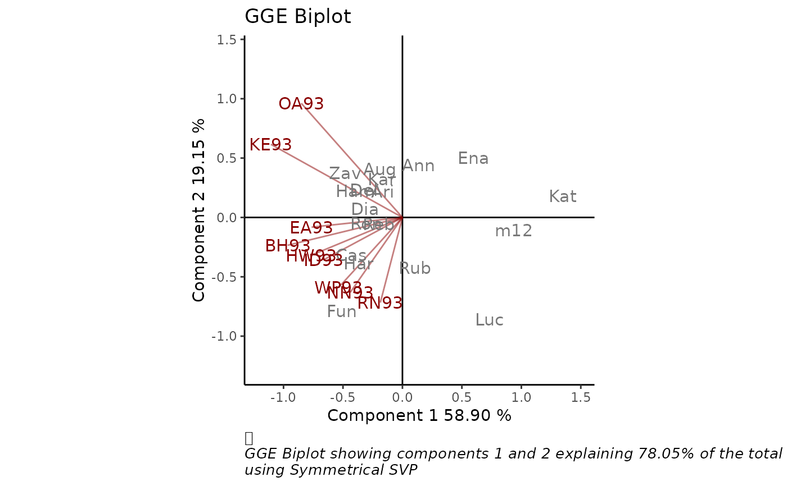

GGE biplot allows a visual examination of the relationships
between test environments, genotypes, and genotype by environment
interactions. GGEPlot produces this biplot as an object of class 'ggplot' by
a call to GGEmodel function. It is possible to
personalize the graphic so that the stylistic attributes are choosen by the
user. This function is a modification of GGEPlot
from GGEBiplots package.
GGEPlot( GGEModel, type = "Biplot", d1 = 1, d2 = 2, selectedE = NA, selectedG = NA, selectedG1 = NA, selectedG2 = NA, colGen = "gray47", colEnv = "darkred", colSegment = "gray30", colHull = "gray30", sizeGen = 4, sizeEnv = 4, largeSize = 4.5, axis_expand = 1.2, axislabels = TRUE, axes = TRUE, limits = TRUE, titles = TRUE, footnote = TRUE )
Arguments
| GGEModel | An object of class |
|---|---|
| type | type of biplot to produce.
|
| d1 | PCA component to plot on x axis. Defaults to 1. |
| d2 | PCA component to plot on y axis. Defaults to 2. |
| selectedE | name of the environment to evaluate when type="Selected Environment". |
| selectedG | name of the genotype to evaluate when type="Selected Genotype". |
| selectedG1 | name of a genotype to compare when type="Comparison of Genotype". |
| selectedG2 | name of a genotype to compare with selectedG1 when type="Comparison of Genotype". |
| colGen | genotype attributes colour. Defaults to "gray47". |
| colEnv | environment attributes colour. Defaults to "darkred". |
| colSegment | segment or circle lines colour. Defaults to "gray30". |
| colHull | hull colour when type="Which Won Where/What". Defaults to "gray30". |
| sizeGen | genotype labels text size. Defaults to 4. |
| sizeEnv | environment labels text size. Defaults to 4. |
| largeSize | larger labels text size to use for two selected genotypes in type="Comparison of Genotype", and for the outermost genotypes in type="Which Won Where/What". Defaults to 4.5. |
| axis_expand | multiplication factor to expand the axis limits by to enable fitting of labels. Defaults to 1.2. |
| axislabels | logical, if this argument is TRUE labels for axes are included. Defaults to TRUE. |
| axes | logical, if this argument is TRUE x and y axes going through the origin. Defaults to TRUE. |
| limits | logical, if this argument is TRUE the axes are rescaled. Defaults to TRUE. |
| titles | logical, if this argument is TRUE a plot title is included. Defaults to TRUE. |
| footnote | logical, if this argument is TRUE a footnote is included. Defaults to TRUE. |
Value
A biplot of class ggplot
References
Yan W, Kang M (2003). GGE Biplot Analysis: A Graphical Tool for Breeders, Geneticists, and Agronomists. CRC Press.
Sam Dumble (2017). GGEBiplots: GGE Biplots with 'ggplot2'. R package version 0.1.1. https://CRAN.R-project.org/package=GGEBiplots
Examples
library(geneticae) # Data without replication data(yan.winterwheat) GGE1 <- GGEmodel(yan.winterwheat, centering = "tester") GGEPlot(GGE1)# Data with replication data(plrv) GGE2 <- GGEmodel(plrv,genotype="Genotype",environment="Locality", response="Yield", rep="Rep", centering = "tester") GGEPlot(GGE2)